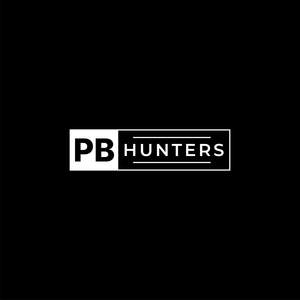

Trade Mark Journal No.2025/013 28 March 2025
UK00004161218 17 February 2025 (18,21,25)

- Class 18
- Backpacks; Backpacks [rucksacks]; School backpacks; Baby backpacks; Small backpacks; Rucksacks; Duffel bags; Duffle bags; Duffel bags for travel; Knapsacks; Daypacks; Hiking rucksacks; Luggage bags; Hiking bags; Bags for campers; Camping bags; Bags for sports clothing; Luggage, bags, wallets and other carriers; Backpacks with rolling wheels; Bags for climbers; Rucksacks for mountaineers; Travel bags; Bags for travel; Traveling bags; All-purpose carrying bags; Athletic bags; Gym bags; Small rucksacks; Sports bags; Bags for sports; Athletics bags; Hunting bags; Holdalls for sports clothing; Beach bags; Waist bags; Shoulder bags; All-purpose sports bags; Sports packs.
- Class 21
- Drinking bottles; Bottles; Water bottles; Drinking bottles for sports; Vacuum flasks for holding drinks.
- Class 25
- Quilted jackets [clothing]; Clothing for sports; Sports clothing; Clothes for sports; Jackets being sports clothing; Sports garments; Articles of sports clothing; Sports clothing [other than golf gloves]; Clothes for sport; Athletic clothing; Sports shirts; Sports jackets; Sports wear; Clothing; Clothing for gymnastics; Triathlon clothing; Sports jerseys; Leisure clothing; Sports vests; Sports pants; Jerseys [clothing]; Clothing for leisure wear; Moisture-wicking sports shirts; Sport shirts; Shorts [clothing]; Casual clothing; Moisture-wicking sports pants; Water-resistant clothing; Articles of clothing; Men's clothing; Sportswear; Sports caps; Waterproof clothing; Windproof clothing.
The Marquis Collection LTD